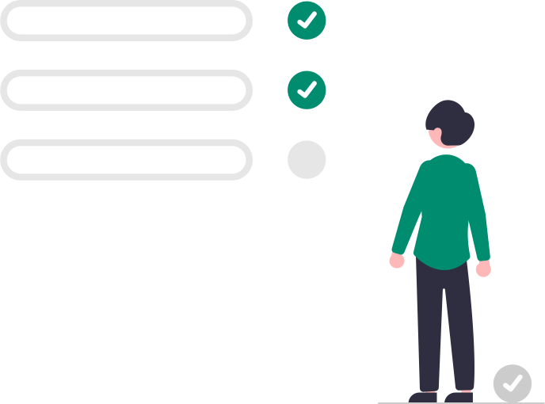

Fonctionnalités
Des formulaires génériques rapidement configurables avec de nombreux types de champs disponibles.
Localisez les demandes sur le territoire grâce à la cartographie et suivez le planning prévu grâce à un calendrier.
Faites circuler la demande auprès des autres personnes devant donner leur avis en leur donnant toutes les informations nécessaires.

Approuvez / Refusez la demande et générez les documents nécessaires. Accédez simplement à l'ensemble des documents concernant une demande.
Visualisez à l'aide d'une carte et d'un calendrier les événements ou chantiers planifiés.
Rendez tout publics les événements souhaités et communiquez les événements planifiés.
Gérez les prolongations de façon simple et efficace. Rappelez automatiquement les utilisateurs devant prolonger leur demande